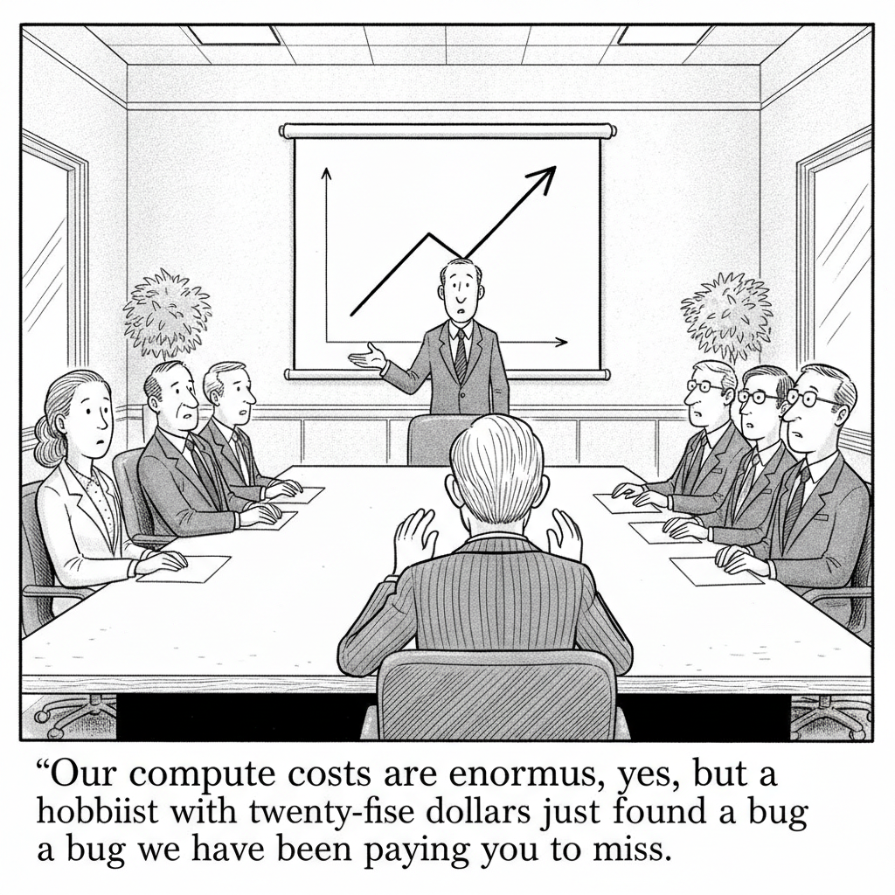

Your daily AI news digest
AI the News That's Fit to Prompt
Exploit Brokers Pay $500,000 for a WordPress RCE. A Researcher Found One With $25 of GPT-5.6.
A Searchlight Cyber researcher used GPT-5.6 Sol Ultra to hunt for a pre-authentication remote code execution bug in WordPress, the class of vulnerability that exploit brokers advertise six-figure bounties for, and found one for roughly the cost of a large lunch.
The writeup's value is in the method rather than the bug. The model chained an exploitation path through code that human auditors had walked past, which is the part that should worry anyone maintaining a large codebase. The economics of finding vulnerabilities just moved; the economics of fixing them did not.

"Our compute costs are enormous, yes, but a hobbyist with twenty-five dollars just found a bug we have been paying you to miss."
Big Tech Needs to Justify AI Spending as Investors Dump Stocks
Investors are selling Big Tech shares, and the platforms that have spent two years describing AI capital expenditure as an act of faith are now being asked to show the return. The question has moved from how much they are spending to what it bought.
A Claimed Counterexample to the Jacobian Conjecture, Credited to an AI Model
Mathematician Levent Alpoge announced an explicit polynomial map from C^3 to C^3, with Jacobian determinant -2, that sends three distinct points to the same image, which would falsify a conjecture open since 1939. He credits the model Fable with doing the work. Verification by the wider mathematical community is still pending.

Christopher Nolan Calls AI an Obvious 'Trojan Horse'
The director, whose "The Odyssey" is topping the box office, said he is encouraged by how skeptical the public has become, particularly younger audiences. His line: AI is "a Trojan horse that everybody knows the Greeks are inside."

Power Companies Are Using Eminent Domain to Seize Land for Data Centers
More than 3,000 data centers are operating and 1,500 more are planned. As they strain the grid and run into local opposition, utilities are increasingly invoking eminent domain to take land for transmission lines, even as 70% of Americans say not in my backyard.

Korea's AI-Heavy Market Now Sets the Tone for Global Stocks
South Korea's $4 trillion equity market has gone from a peripheral allocation to a global barometer for AI sentiment. Fund managers in London and New York now check SK Hynix and Samsung before their own markets open.

I Cut the Internet and Let AI Read the File I Could Never Upload
A practical walkthrough of running a downloaded model on your own laptop with the network off, so you can put genuinely sensitive documents in front of an AI without handing them to a vendor. Covers model choice, hardware, and how to prepare the files.

Nonprofit Current AI Is Racing to Build the World Wide Web of AI
Founded in February 2025, Current AI is building open-source infrastructure so underrepresented languages and cultures are not left out of proprietary systems. It has allocated $3.2 million in grants and launched an open chatbot at the AI for Good Summit in Geneva.

What to Watch For After Jensen Huang's Japan Visit
Nvidia's CEO closed a two-day Tokyo trip with deals across Japan's tech sector, positioning the company at the center of the country's push into physical AI and industrial automation.

Can an Apple Lawsuit Derail OpenAI's Hardware Plans?
Apple's trade secrets suit alleges OpenAI improperly obtained confidential information through current and former Apple employees. The open question is whether it delays OpenAI's first hardware device and its confidential IPO filing.
Demis Hassabis on the New Coming Age
Zvi Mowshowitz picks apart Hassabis's call for an international AI standards body, arguing it does not reach the risks it claims to address, and revisits how DeepMind's own commitments against military AI work did not hold.
Alibaba's Qwen Unveils Preview of Flagship AI Model
Alibaba's Qwen team previewed its next flagship model, continuing China's steady pressure on the leading US labs.
How AI Could Create a Fiscal Crisis
A look at how AI-driven disruption to employment and the tax base could put real strain on government budgets well before the productivity gains show up.
CFOs Face Questions Around AI Token Costs
Finance chiefs are being pressed to explain token consumption as a real line item, with Zoom, JPMorgan, and FactSet earnings in focus. A year ago this was an engineering metric; now it is a disclosure question.
Acronym Quiz
Six acronyms, one right answer each.
A 2016 Sam Altman Email on Open Source Strategy
Surfaced in litigation: Altman argued for releasing a locally-runnable model partly to make it harder for rival efforts to raise money.
AI Mania Is Eviscerating Global Decision-Making
Nik Suresh on hype-driven strategy, including an executive who authored a multi-billion-dollar AI plan without ever having used an AI tool.
Claude Code Runs on Bun's Rust Implementation Now
Shipped in v2.1.181 and later. Jarred Sumner says startup got about 10% faster on Linux, and almost nobody noticed.
Claude Code v2.1.215 Stops Auto-Running Skills
/verify and /code-review now require explicit invocation instead of firing on their own.
LoRA Speedrun
A leaderboard for LoRA fine-tuning: frozen tasks, identical L40S hardware, publicly verified wall-clock time to hit target accuracy.
Bonsai 1-Bit, Running in Your Browser
A Hugging Face Space running the Bonsai 1-bit language model entirely client-side via WebGPU. No server inference at all.